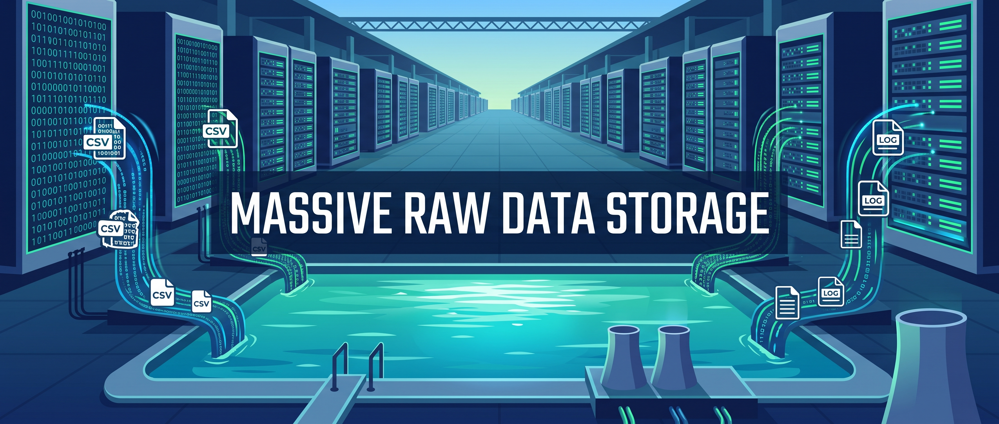
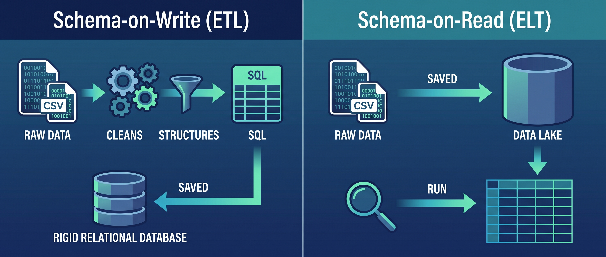
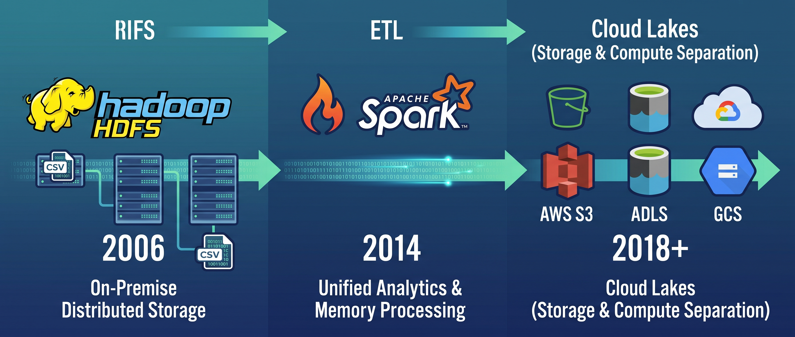
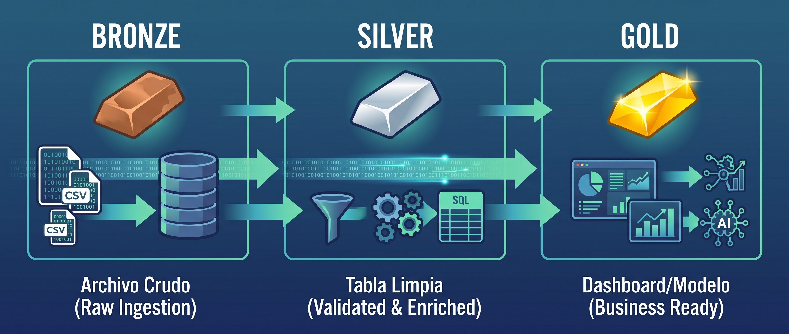
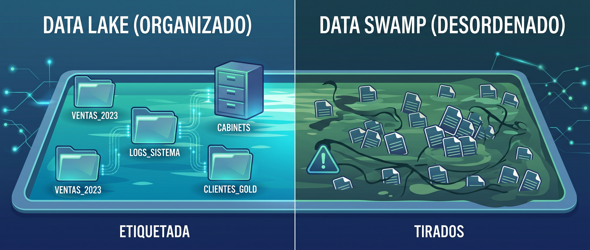

Data Lake#

Contexto historico#
A finales de los 2000s, el Data Warehouse llevaba mas de una decada funcionando bien para reportes de negocio. Pero el mundo empezo a generar datos que no cabian en su modelo:
Tipo de dato |
Por que no cabe en un Warehouse |
|---|---|
Logs de servidores |
Millones de lineas por dia, texto semi-estructurado |
Datos de sensores IoT |
Alta frecuencia, volumenes enormes, formatos variados |
Redes sociales |
Texto libre, imagenes, JSON anidado |
Clickstream web |
Cada click de cada usuario, petabytes al ano |
Imagenes y video |
Binarios, no son tablas |
Datos de APIs externas |
JSON con estructura variable |
El Warehouse exigia que todo fuera tabla con columnas fijas, limpio antes de entrar, y el almacenamiento era caro. Guardar petabytes de logs crudos «por si acaso» no era viable. Se necesitaba un lugar donde tirar todo a bajo costo y decidir despues que hacer con ello.
En 2010, James Dixon (CTO de Pentaho) acuno el termino «Data Lake» como contraposicion al Warehouse: en vez de un almacen ordenado donde todo tiene su lugar, un lago donde los rios (fuentes) depositan sus datos en su estado natural.
Que es un Data Lake#
Un Data Lake es un repositorio centralizado que almacena datos en su formato original, sin transformar ni estructurar. Puede contener datos estructurados (CSV, Parquet), semi-estructurados (JSON, XML, logs) y no estructurados (imagenes, audio, PDF).
Las caracteristicas que lo definen:
Caracteristica |
Que significa |
|---|---|
Almacenamiento crudo |
Los datos entran tal como llegan, sin limpieza ni transformacion |
Schema-on-Read |
El esquema se aplica cuando alguien lee los datos, no cuando se escriben |
Multi-formato |
CSV, JSON, Parquet, imagenes, audio, logs — todo convive |
Bajo costo |
Usa almacenamiento de objetos (S3, Azure Blob) que cuesta centavos por GB |
Escala horizontal |
Se puede escalar a petabytes sin redisenar la arquitectura |
Separacion almacenamiento-computo |
Los datos se guardan en un lugar, se procesan desde otro |
Schema-on-Write vs Schema-on-Read#
Esta es la diferencia fundamental entre Warehouse y Lake:

Schema-on-Write (Warehouse)#
Datos ──► Definir esquema ──► Limpiar ──► Validar ──► Escribir
(antes de entrar)
Si no cumple el esquema, no entra.
Lento de configurar, pero todo lo de adentro es confiable.
Schema-on-Read (Lake)#
Datos ──► Escribir directo ──► (almacenado crudo)
... tiempo despues ...
Leer ──► Aplicar esquema ──► Interpretar
(al momento de usar)
Rapido de configurar, pero la calidad depende de quien lee.
La ventaja del Schema-on-Read es la velocidad: los datos estan disponibles en segundos, no en semanas. La desventaja es que cada persona que lee tiene que resolver los problemas de calidad por su cuenta, o peor — ni se da cuenta de que los datos tienen problemas.
La era Hadoop#
El primer Data Lake masivo se construyo sobre Apache Hadoop, un framework open-source para almacenar y procesar datos distribuidos:
Componente |
Que hace |
|---|---|
HDFS (Hadoop Distributed File System) |
Almacenamiento distribuido en un cluster de maquinas |
MapReduce |
Motor de procesamiento por lotes (batch) |
YARN |
Gestor de recursos del cluster |
Hive |
Interfaz SQL sobre archivos en HDFS |
Hadoop fue revolucionario: por primera vez se podia almacenar petabytes de datos en hardware commodity (servidores baratos) en vez de servidores especializados. Google, Yahoo, Facebook y LinkedIn fueron los primeros en adoptarlo.
Pero Hadoop tenia problemas:
Problema |
Consecuencia |
|---|---|
MapReduce era lento |
Horas para procesar un query que en SQL tardaba minutos |
Dificil de operar |
Requeria administradores especializados en el cluster |
Solo procesamiento batch |
No servia para consultas interactivas |
Java pesado |
Escribir un job de MapReduce era decenas de lineas de Java |
Estos problemas llevaron a la creacion de Apache Spark (2014), que reemplazo MapReduce con un motor de procesamiento en memoria 10-100x mas rapido, y eventualmente a la migracion de HDFS a almacenamiento en la nube (S3, Azure Blob, GCS), eliminando la necesidad de administrar un cluster Hadoop.
Hoy, muy pocas empresas nuevas instalan Hadoop. Usan S3 + Spark, o directamente servicios cloud. Pero el concepto de Data Lake que Hadoop popularizo sigue vigente.

Arquitectura: zonas del Data Lake#
Un Data Lake sin organizacion es un pantano. La practica estandar es dividirlo en zonas (tambien llamadas capas o medallion architecture) que representan el nivel de madurez de los datos:

Zona Bronze (Raw)#
Los datos llegan tal como estan. No se tocan, no se limpian, no se borran. Son la fuente de verdad — si algo sale mal en las capas superiores, siempre se puede volver a procesar desde Bronze.
bronze/
├── ventas/
│ ├── fuente=erp/
│ │ ├── 2024-06-01.csv
│ │ └── 2024-06-02.csv
│ └── fuente=crm/
│ └── leads_junio.json
├── logs/
│ └── server/
│ └── 2024-06-01.log
└── imagenes/
└── productos/
├── prod_101.jpg
└── prod_102.jpg
Regla |
Por que |
|---|---|
Nunca modificar un archivo en Bronze |
Si se corrompe la fuente de verdad, no hay como recuperar |
Particionar por fecha de llegada |
Para saber cuando llego cada archivo |
Guardar metadata de origen |
De donde vino, cuando, quien lo envio |
Zona Silver (Processed)#
Los datos de Bronze se limpian, tipan, deduplicany y estandarizan. El resultado es un dataset limpio en formato eficiente (Parquet). Todavia no esta modelado para un caso de uso especifico — es un dataset general limpio.
silver/
├── ventas/
│ └── ventas_consolidadas.parquet # CSV + JSON unificados
│ # Columnas renombradas
│ # Tipos correctos
│ # Nulos tratados
│ # Duplicados eliminados
└── logs/
└── logs_parseados.parquet # Texto parseado a columnas
# timestamp, nivel, usuario, accion
Aqui se aplica todo lo de la Unidad 1 (limpieza) y Unidad 2 (validacion, contratos).
Zona Gold (Curated)#
Los datos de Silver se modelan y agregan para un caso de uso especifico: un dashboard, un KPI, un modelo de ML. Es lo que consume el usuario final.
gold/
├── dashboard_ventas/
│ ├── resumen_regional.parquet # Ingreso por region y mes
│ └── top_productos.parquet # Ranking de productos
├── kpis/
│ └── kpis_mensuales.parquet # MRR, churn, retencion
└── modelos/
└── features_churn.parquet # Features para modelo de churn
Flujo completo#
Fuentes ──► Bronze (crudo) ──► Silver (limpio) ──► Gold (listo para usar)
│ │ │
│ │ ├── Dashboards
│ │ ├── Reportes
│ │ └── Modelos ML
│ │
│ └── Analistas exploran aqui
│
└── Fuente de verdad (nunca se borra)
Formatos de archivo en un Data Lake#
El formato del archivo determina el rendimiento y las capacidades:
Formato |
Tipo |
Compresion |
Tipos preservados |
Lectura selectiva columnas |
Mejor para |
|---|---|---|---|---|---|
CSV |
Texto, filas |
No |
No |
No (lee todo) |
Intercambio simple, Excel |
JSON |
Texto, documentos |
No |
Parcial |
No |
APIs, datos semi-estructurados |
Parquet |
Binario, columnas |
Si (snappy/gzip) |
Si |
Si (solo lee las columnas pedidas) |
Analitica, Data Lakes, produccion |
Avro |
Binario, filas |
Si |
Si |
No |
Streaming, Kafka |
ORC |
Binario, columnas |
Si |
Si |
Si |
Hive, Hadoop legacy |
Parquet es el formato dominante en Data Lakes modernos por su combinacion de compresion, velocidad y lectura selectiva de columnas.

Almacenamiento por filas vs por columnas#
CSV guarda los datos por fila:
Ana, Bogota, 4500
Carlos, Medellin, 2400
Maria, Cali, 3500
Si solo necesitas la columna ingreso, CSV tiene que leer TODA la fila para llegar al tercer campo. Con millones de filas, eso es lento.
Parquet guarda los datos por columna:
[Ana, Carlos, Maria] ← columna nombre
[Bogota, Medellin, Cali] ← columna ciudad
[4500, 2400, 3500] ← columna ingreso
Si solo necesitas ingreso, Parquet lee solo ese bloque. Con 50 columnas y solo necesitas 3, Parquet lee el 6% del archivo. CSV lee el 100%.
Particionamiento#
Cuando un dataset tiene millones de filas, conviene particionarlo: dividirlo en subcarpetas por una columna clave (fecha, region, categoria). Asi, una consulta que filtra por esa columna solo lee la particion relevante.
ventas/
├── anio=2023/
│ ├── mes=01/
│ │ └── part-00000.parquet # Solo datos de enero 2023
│ ├── mes=02/
│ │ └── part-00000.parquet
│ └── ...
└── anio=2024/
├── mes=01/
│ └── part-00000.parquet # Solo datos de enero 2024
└── ...
# Sin particionamiento: lee TODAS las filas
df = pd.read_parquet("ventas/")
# Con particionamiento: lee solo junio 2024
df = pd.read_parquet("ventas/", filters=[("anio", "=", 2024), ("mes", "=", 6)])
Sin particionamiento |
Con particionamiento |
|---|---|
Lee todo el dataset |
Lee solo la carpeta relevante |
10 millones de filas |
500,000 filas (solo un mes) |
2 minutos |
5 segundos |
La columna de particion debe tener baja cardinalidad (pocos valores unicos). Fecha (por ano/mes) y region son buenas opciones. ID de cliente (miles de valores) no — crearia miles de carpetas con archivos diminutos.
El problema: Data Swamp#
Un Data Lake sin gobierno se convierte en un Data Swamp (pantano de datos): nadie sabe que hay, los datos no se pueden usar y el Lake se vuelve un cementerio de archivos.

Sintomas del Data Swamp#
Sintoma |
Ejemplo real |
|---|---|
Nadie sabe que hay |
«Hay un CSV de ventas en alguna carpeta, creo que lo subio Juan en 2022» |
Formatos inconsistentes |
Un archivo tiene columna |
Sin documentacion |
«Que significa la columna |
Datos duplicados |
El mismo archivo cargado 3 veces con nombres |
Sin calidad |
Archivos corruptos, vacios, con encoding roto, nulos disfrazados |
Sin control de acceso |
Cualquiera puede subir, modificar o borrar archivos |
Sin metadata |
No se sabe cuando llego cada archivo, de donde vino, ni que tan fresco es |
Como prevenirlo#
Practica |
Que resuelve |
|---|---|
Zonas Bronze/Silver/Gold |
Separar crudo de limpio de listo para consumo |
Contratos de datos (U 2.2) |
Definir esquema, propietario, consumidores, SLA |
Validacion automatica (U 2.1) |
Rechazar datos que no cumplen el esquema |
Catalogo de datos |
Un registro centralizado de que datasets existen, que significan y quien los mantiene |
Nomenclatura estandar |
Reglas de nombres de carpetas y archivos |
Control de acceso |
Permisos por zona y por equipo |
Linaje de datos (Data Lineage) |
Rastrear de donde vino cada dato y por que transformaciones paso |
Implementaciones#
En la nube#
Servicio |
Proveedor |
Caracteristicas |
|---|---|---|
Amazon S3 |
AWS |
El almacenamiento de objetos mas usado del mundo. Barato, escala infinita. La base de la mayoria de Lakes |
Azure Data Lake Storage (ADLS) |
Microsoft |
Integrado con Databricks, Synapse y Power BI. Soporte nativo para jerarquia de directorios |
Google Cloud Storage (GCS) |
Integrado con BigQuery. Multiples clases de almacenamiento por frecuencia de acceso |
Local / open source#
Herramienta |
Que hace |
|---|---|
MinIO |
Almacenamiento S3-compatible que corre en tu maquina o servidor. Ideal para montar un Lake local de desarrollo |
HDFS |
El sistema de archivos distribuido original de Hadoop. Ya poco usado para Lakes nuevos, pero sigue en empresas legacy |
Carpeta en disco |
Para aprendizaje y desarrollo, una carpeta organizada con Parquet funciona como un Lake local |
Ventajas y desventajas#
Ventajas |
Desventajas |
|---|---|
Almacena cualquier tipo de dato |
Sin gobierno se vuelve Data Swamp |
Muy barato (centavos por GB en la nube) |
No garantiza calidad ni consistencia por defecto |
Flexible (no necesitas esquema previo) |
No soporta transacciones ACID (Parquet puro) |
Escala a petabytes sin redisenar |
Consultas sobre datos crudos son lentas |
Base para ML, analitica exploratoria y BI |
Requiere herramientas adicionales para consultas SQL eficientes |
Separacion almacenamiento-computo |
Necesita gobernanza activa para no degradarse |
Datos crudos siempre disponibles para reprocesar |
La transformacion la hace cada consumidor (duplicacion de esfuerzo) |
Cuando usar un Data Lake#
Si:
Necesitas almacenar datos de muchas fuentes y formatos a bajo costo
No sabes de antemano que preguntas vas a hacer
Necesitas datos crudos para ML o analisis exploratorio
El volumen es grande (terabytes+) y el presupuesto es limitado
Quieres desacoplar almacenamiento de procesamiento
No:
Solo necesitas reportes SQL sobre datos estructurados (un Warehouse es mas simple)
No tienes equipo para mantener gobernanza y zonas
El volumen es pequeno y cabe en una base de datos normal
Necesitas transacciones ACID sobre los datos (necesitas Delta Lake o un Lakehouse)